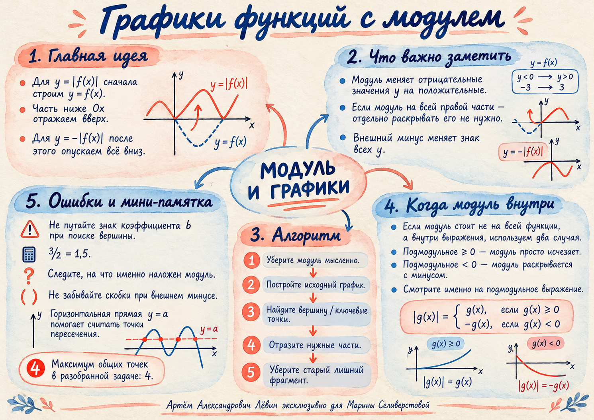

Исходная парабола
Ветви вверх, вершина ниже Ox. Участок между нулями содержит отрицательные значения.
Учебный атлас / Занятие 10.10.26
Как получить график, когда модуль охватывает всю функцию: что оставить, что отразить и как использовать прямую y = m в задачах ОГЭ.
Сначала определите расположение модуля.
Когда модуль стоит вокруг всей правой части, начинайте с графика y = f(x). Абсциссы точек сохраняются; отрицательные ординаты меняют знак.
После построения y = |f(x)| отразите весь график относительно Ox. Получится y = −|f(x)|, причём y ≤ 0.
Вершина, нули и отражённая дуга.
Для исходной параболы f(x)=x²−x−6 найдём вершину, нули и пересечение с осью Oy.
| Опорная точка | До модуля | После модуля |
|---|---|---|
| Вершина | (0,5; −6,25) | (0,5; 6,25) |
| Нули | (−2; 0), (3; 0) | Без изменений |
| Ось Oy | (0; −6) | (0; 6) |
Между нулями −2 и 3 парабола была ниже Ox. Именно этот участок отражается вверх и образует центральную дугу.
Ветви вверх, вершина ниже Ox. Участок между нулями содержит отрицательные значения.
Все значения неотрицательны. Нули остаются, а центральная вершина оказывается над Ox.
Ветви отражаются, запрет x = 0 остаётся.
Для функции y = |−2/x| = 2/|x| при x ≠ 0 обе ветви лежат выше оси Ox. Для построения удобно взять по три точки по обе стороны от Oy.
| x | −4 | −2 | −1 | 1 | 2 | 4 |
|---|---|---|---|---|---|---|
| y | 0,5 | 1 | 2 | 2 | 1 | 0,5 |
Внешний минус в y = −|1/x| отражает обе ветви вниз. Модуль не отменяет ограничение x ≠ 0.
Сколько общих точек возможно?
Строим исходную параболу. Её вершина (−2; −9), нули: −5 и 1. После отражения вершина центральной дуги становится (−2; 9).
Прямая, параллельная оси Ox, имеет вид y = m. Её высота меняется, а число точек пересечения зависит от положения относительно уровней 0 и 9.
| Значение m | Общих точек |
|---|---|
| m < 0 | 0 |
| m = 0 | 2 |
| 0 < m < 9 | 4 |
| m = 9 | 3 |
| m > 9 | 2 |
Путь А · от техники отражения к задачам ОГЭ.
Для задач на график отмечайте опорные точки и показывайте, какие части отражаются. Ответы открывайте после собственной попытки.
График y=f(x) проходит через точки (−2; −3), (0; 0), (1; 4), (3; −2). Запишите соответствующие точки графика y=|f(x)|.
Постройте y=|x²−4|. Укажите нули и положение вершины исходной параболы после отражения.
Постройте y=|x²−2x−3|. Найдите нули, y(0) и отражённую вершину.
Постройте y=|x²−6x+5|. Отметьте нули, пересечение с Oy и отражённую вершину.
Для y=|−2/x| заполните таблицу при x=−4,−2,−1,1,2,4; постройте график и укажите ОДЗ.
Постройте y=−|3/x|. Укажите полуплоскость, ОДЗ и значения при x=−3,−1,1,3.
Сравните y=|x²+2x+2| и y=|x²+2x−2|. В каком случае необходимо отражение? Объясните с помощью вершины и нулей.
Постройте y=|x²+2x−8|. Найдите наибольшее число пересечений с прямой y=m и значения m, при которых оно достигается.
Для y=|x²−4x+1| найдите все m, при которых горизонтальная прямая имеет ровно три общие точки.
Для y=|x²+2x+2| определите максимальное число общих точек с прямой, параллельной Ox. Объясните отсутствие четырёх пересечений.
Отмечено 0 из 5.
Короткий визуальный итог урока.
Вернитесь к алгоритму перед тренировкой. На постере собраны отражения, правило раскрытия модуля и типичные ошибки.
